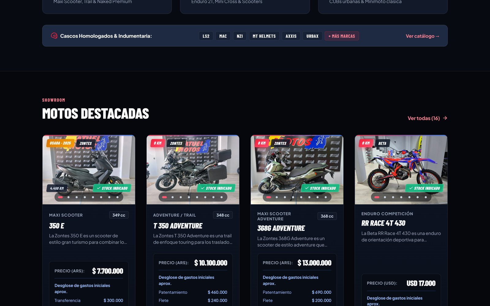
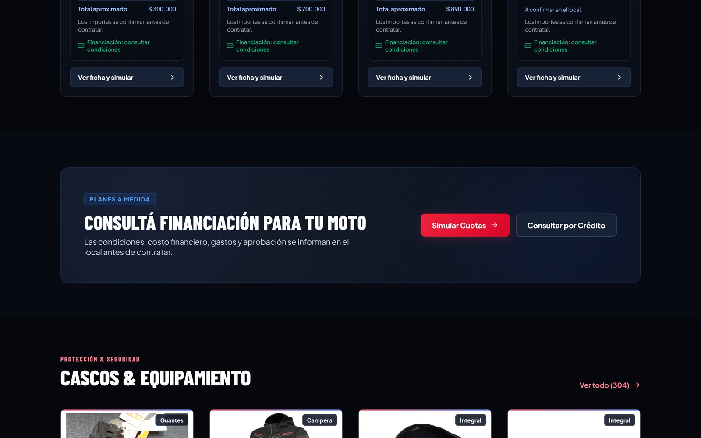

Catálogo de motos
Cada moto tiene galería de fotos, cilindrada, descripción, precio y una estimación de los gastos iniciales.
 Nicolas Sgandurra
Nicolas Sgandurra
Sitios web
El catálogo de un local de motos en internet, con precios, gastos y cuotas a la vista.

Es el sitio de un comercio de motos, cascos e indumentaria de San Rafael. Muestra las motos nuevas y usadas con su precio y el detalle de los gastos de patentamiento y flete, y un catálogo de equipamiento que se actualiza desde una planilla de precios.
Un comercio de motos de San Rafael necesitaba mostrar su catálogo y sus precios en internet, con la información de gastos y financiación antes de que el cliente llegue al local.
Cada moto tiene galería de fotos, cilindrada, descripción, precio y una estimación de los gastos iniciales.
Calcula la financiación en 3 a 24 cuotas fijas para la moto elegida.
Cascos, camperas, guantes y otros equipos, cada uno con su ficha y su precio.
Un script actualiza todos los precios de una vez a partir de una planilla, con vista previa antes de aplicar.
El comercio carga y edita cascos e indumentaria desde un panel propio, sin tocar el código.
Datos estructurados para los buscadores y las opiniones de Google del local en la portada.

Fotos del showroom, estado de cada unidad, precio y el desglose de patentamiento y flete.

Acceso al simulador de cuotas y aviso de que las condiciones se confirman en el local.
Definición con el comercio de qué mostrar, cómo presentar los precios y qué condiciones aclarar.
Sitio en Astro y TypeScript, con la base de datos de productos en Supabase.
Despliegue en Cloudflare, con las imágenes optimizadas para que el catálogo cargue rápido.
El sitio está publicado y se puede recorrer. Si querés saber cómo está hecho, escribime.